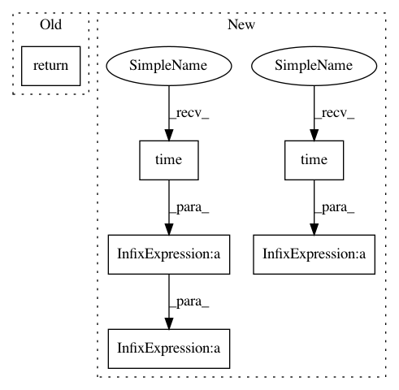

c0be03672484e706c890bef199ad7db76cdaf4d2,tgen/parallel_percrank_train.py,RankerTrainingService,exposed_training_pass,#RankerTrainingService#,237
Before Change
ranker.train_order = all_train_order
// return the result of the computation
log_info("Training pass %d / %d / %d done." % (pass_no, data_offset, data_len))
return pickle.dumps((ranker.get_weights(), ranker.get_diagnostics()), pickle.HIGHEST_PROTOCOL)
def run_worker(head_host, head_port, debug_out=None):
// setup debugging output, if applicable
After Change
ranker = self.ranker_inst
tstart = time.time()
ranker.set_weights(pickle.loads(w))
log_info("Weights loading: %f secs." % (time.time() - tstart))
// save rest of the training data to temporary variables, set just the
// required portion for computation
all_train_das = ranker.train_das
ranker.train_das = ranker.train_das[data_offset:data_offset + data_len]
all_train_trees = ranker.train_trees
ranker.train_trees = ranker.train_trees[data_offset:data_offset + data_len]
all_train_feats = ranker.train_feats
ranker.train_feats = ranker.train_feats[data_offset:data_offset + data_len]
all_train_sents = ranker.train_sents
ranker.train_sents = ranker.train_sents[data_offset:data_offset + data_len]
all_train_order = ranker.train_order
ranker.train_order = range(len(ranker.train_trees))
if ranker.randomize:
rnd.seed(rnd_seed)
rnd.shuffle(ranker.train_order)
// do the actual computation (update w)
ranker._training_pass(pass_no)
// return the rest of the training data to member variables
ranker.train_das = all_train_das
ranker.train_trees = all_train_trees
ranker.train_feats = all_train_feats
ranker.train_sents = all_train_sents
ranker.train_order = all_train_order
// return the result of the computation
log_info("Training pass %d / %d / %d done." % (pass_no, data_offset, data_len))
tstart = time.time()
dump = pickle.dumps((ranker.get_weights(), ranker.get_diagnostics()), pickle.HIGHEST_PROTOCOL)
log_info("Weights saving: %f secs." % (time.time() - tstart))
return dump
In pattern: SUPERPATTERN
Frequency: 3
Non-data size: 6
Instances
Project Name: UFAL-DSG/tgen
Commit Name: c0be03672484e706c890bef199ad7db76cdaf4d2
Time: 2015-12-15
Author: odusek@ufal.mff.cuni.cz
File Name: tgen/parallel_percrank_train.py
Class Name: RankerTrainingService
Method Name: exposed_training_pass
Project Name: numerai/submission-criteria
Commit Name: a21115861976258401957cd687a5447e6f409be4
Time: 2017-09-17
Author: scorch@stink
File Name: benchmark_originality.py
Class Name:
Method Name: check_original
Project Name: UFAL-DSG/tgen
Commit Name: c0be03672484e706c890bef199ad7db76cdaf4d2
Time: 2015-12-15
Author: odusek@ufal.mff.cuni.cz
File Name: tgen/parallel_percrank_train.py
Class Name: RankerTrainingService
Method Name: exposed_training_pass
Project Name: scikit-learn-contrib/categorical-encoding
Commit Name: 9e2385f00975bcba7926396c6563eb8488d778f6
Time: 2018-09-02
Author: jan@motl.us
File Name: examples/benchmarking_large/util.py
Class Name:
Method Name: train_model